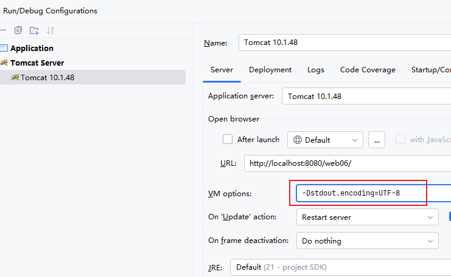

config/logging.properties 文件中，字符编码也已设为 UTF-8在上述配置下，Servlet 中使用 System.out.println() 打印中文时，控制台输出仍然出现乱码。
Tomcat 容器的标准输出流（System.out）编码与 IDEA 控制台显示编码不一致。
具体来说：
- Tomcat 的 System.out 默认使用 GBK 编码输出
- IDEA 控制台期望接收 UTF-8 编码的文本
- 编码不匹配导致中文显示为乱码
验证方式：在 Servlet 中调用 System.out.charset()，返回结果为 GBK。
在 Tomcat 的 VM options 中添加以下配置：
-Dstdout.encoding=UTF-8
配置位置参考下图：
